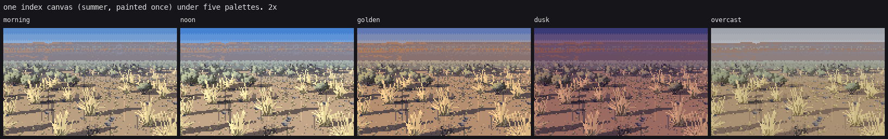
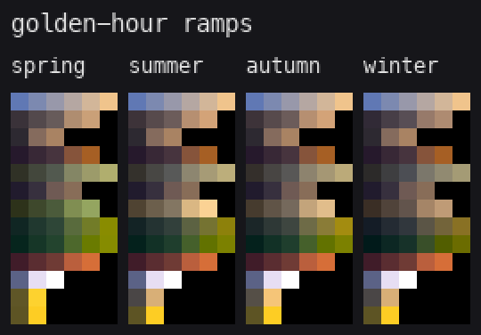

5. The palette is the light
Ready as a system. The key it produces is too pale: see the end.
Every painter in this study writes indices, not colours: a material (SAGE, GRASS, GROUND and so on) and a step on that material's ramp, 0 darkest. The step is a statement about form and light: 0 to 2 are the shadow family (lit by the sky only), 3 and up the lit family (the sun as well). Season and hour live entirely in the palette. This is the studio's convergent finding (the master-copy student measured it in Ferrari's own index maps). What follows is how I built the ramps and what went wrong with them.
One canvas, five hours

figs.fig_palette: one call to scene.paint_scene, rendered five times. Only the Palette changes.
The price is visible: the cast shadows were painted for one sun, so they're the same length at noon as at golden hour, and they're still there under overcast. In the scenes and sheets I repaint per hour, and paint_scene skips cast shadows when the hour is "overcast". The index canvas is stable across hours only for things whose geometry doesn't depend on the sun.
Building a ramp
palette.Palette.ramp, for each material:
occ, sunf = PLAN[n] # per-step (sky occlusion, sun fraction)
alb = sp.srgb_to_lin(self.alb.get(m, (128, 128, 128)))
sun = np.array(self.h["sun"]) * self.h["k"]
sky = np.array(self.h["sky"])
cols = []
for i in range(n):
lin = alb * (occ[i] * sky + sunf[i] * sun)
cols.append(sp.lin_to_srgb(lin))
with the step plan for a six-step ramp:
6: ([0.28, 0.55, 0.85, 1.0, 1.0, 1.0], # how much sky each step sees
[0.0, 0.0, 0.0, 0.40, 0.66, 0.92]), # how much sun: zero below the terminator
So a step is a physical claim: step 1 is "a pocket that sees half the sky and no sun", and step 4 is "open to the sky with two-thirds of the sun". An hour is a sun colour and strength and a sky colour:
"golden": dict(sun=(1.05, 0.78, 0.50), sky=(0.34, 0.36, 0.54), haze=(214, 186, 170), ...),
A season is a set of albedo overrides: grass green in spring, straw in summer, greyer in autumn, grey-tan in winter.
Then, in OKLab, two hue shifts:
- The shadow end moves per material (
SHADOW_SHIFT). For sage and grass it moves toward olive (+a, +b), not blue. My first sage shadows were teal, and the critic was right: at low sun the Hungate photo's sage shadow is deep olive toward black. - The lit end moves per material (
LIGHT_SHIFT), scaled by how warm the sun is. Needles go yellow-green, and sage goes toward straw-silver, which is the warm rim on grey foliage.
sun_warm = max(0.0, (self.h["sun"][0] - self.h["sun"][2])) # warm hours push more
for i in range(n):
t = max(0.0, (i - (n - 1) * 0.5) / ((n - 1) * 0.5)) # 0 below the middle step, 1 at the top
lab[i, 0] += ls[0] * t
lab[i, 1] += ls[1] * t
lab[i, 2] += ls[2] * t * (1 + sun_warm)
Last comes a small push on lightness (L ** 1.06) to key the darks a little deeper.

Golden-hour ramps for each season. Rows, top to bottom: SKY, GROUND, CRUST, BASALT, SAGE, STEM, GRASS, BITTER, NEEDLE, BARK, SNOW, FLOWER, FORB.
Depth bands
Each pixel also carries a depth band (0 near, 4 far). A band pulls the ramp toward the hour's haze colour, and the darks move much more than the lights. The master-copy student measured that in Ferrari: lit colour stays with distance, shadow colour changes.
t = min(0.85, band / (self.bands + 0.5))
for i in range(n):
wgt = t * (1.0 - 0.55 * i / max(1, n - 1)) # darks move a lot, lights little
lab[i] = lab[i] * (1 - wgt) + hl * wgt
The mistakes, in the order I made them

The first ramps: a huge jump at the terminator and near-black shadow steps. Steppe shadows are full of sky and bounce off pale ground, so I raised the occlusion plan (occ[0] went 0.22 → 0.28, occ[2] 0.72 → 0.85) and the sky strengths.
- Terminator too hard, shadows too black. Fixed as above.
- Mint sage. The albedo was too pale and blue, and the shadow shifted toward teal. I moved the albedo to (160, 166, 142) and the shadow shift to olive.
- Straw the same as loess. The tussocks vanished into the ground until GRASS was lifted to (222, 202, 146) and GROUND lowered to (192, 162, 124).
- Golden hour on the ground only. The critic: "the loess glows, but the sage lit planes are the same cool grey-green as noon".
LIGHT_SHIFTscaled bysun_warmis the fix.
Where it falls short

The Hungate Canyon photo in low sun | my golden sage flat | Ferrari's V16PM golden grass.
Mine is paler and more pastel than both. Ferrari's grass is saturated ochre with near-black olive strands, one strong light family. The photo's sage is deep, saturated olive with warm tops. My golden hour lifts the darks too much and keeps chroma low, so it reads as hazy noon with long shadows. That's because the sky ambient is high everywhere and nothing adds chroma in the warm hours. Next I'd give each hour a chroma gain on the lit family and a lower sky ambient for golden and dusk, and judge the result side by side against the photo, not by eye alone.